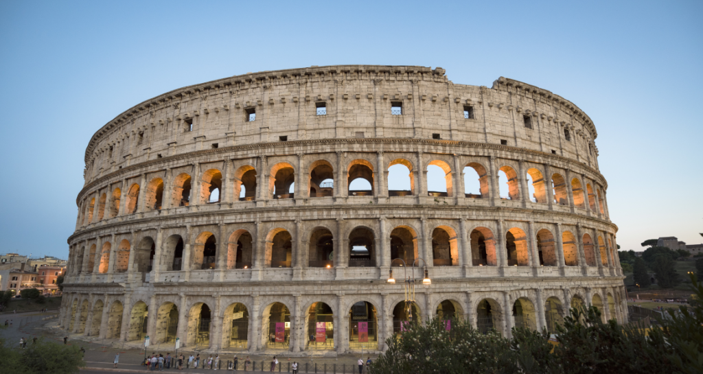

О Рим, о вечный город
 Римская империя была самым большим государством, которое когда-либо видела западная Евразия. Она простиралась от Атлантического побережья Испании и Англии на западе до Ирака, Кувейта, Турции и Сирии на востоке. Империя также поглотила все африканское побережье в Средиземном море. Римская империя оставила неизгладимый след в истории человечества. Это была огромная многонациональная держава со сложной политической и социальной системой. Империя просуществовала 5 столетий, пока окончательно не пришла в упадок.
Римская империя была самым большим государством, которое когда-либо видела западная Евразия. Она простиралась от Атлантического побережья Испании и Англии на западе до Ирака, Кувейта, Турции и Сирии на востоке. Империя также поглотила все африканское побережье в Средиземном море. Римская империя оставила неизгладимый след в истории человечества. Это была огромная многонациональная держава со сложной политической и социальной системой. Империя просуществовала 5 столетий, пока окончательно не пришла в упадок.
К 285 году империя разрасталась слишком быстро, и правители Рима не смогли эффективно управлять её дальними землями. Поэтому, по решению Гая Аврелия Валерия Диоклетиана империя (284-305) была поделена на Западную и Восточную. Зарождение империи принято считать, когда Август Цезарь (27-14 до н.э.) стал её первым императором на Западе и упадком во время правления Флавия Ромула Августа (475-476), когда его свергнул германский король Одоакр (476-493). Что касается Восточной Римской Империи (но чаще её называют Византией), то она просуществовала куда дольше – до 1453 года, когда её последний правитель - Константин II (1449-1453) не справился с гнетом османов, которые захватили город. Тогда Восточная Римская Империя прекратила своё существование.
Пять Хороших Императоров
Приемником Домициана стал его советник – Нерва, который основал Нерва-Домицианскую или династию Антонинов, которая правила Римской Империей с 96 по 196 год. Этот период известен как годы правления «Пяти Хороших Императоров» Рима. С 95 по 180 год Римом правят пять самые величайшие императоры за всю историю, когда Империя достигла наибольшего могущества и процветания, а именно:
- Нерва (96-98)
- Траян, (98-117)
- Адриан, (117-138)
- Антонин Пий (то есть Благочестивый) (138-161)
- Марк Аврелий (161-180)
Именно в это время Римская империя достигла наивысшего могущества. Внутреннее положение было стабильным, благосостояние граждан росло, а экономика процветала. Луций Вер и Коммод были двумя последними императорами из династии Антонинов. Луций Вер был соправителем вместе с Марком Аврелием в период с 180 по 192 год. Он не был подготовлен к роли императора, поэтому практически всю свою жизнь проводил в пиршествах и развлечениях. После его смерти от апоплексического удара в 169 году, империей правил Марк Аврелий единолично. После его смерти на престол восходит Луций Коммод. Он вел абсолютно аморальный и развратный образ жизни. Во время его правления казна все время истощалась, в том числе из-за огромных хищений. Он был задушен своим партнером по борьбе в 192 г. Со свержением Коммода закончился период политической стабильности и конец династии Нерво-Антонинской династии. После него на престол восходит Петринакс, который, скорее всего и устроил убийство Коммода.
Две Империи: Западная и Восточная
Этот период характеризовался постоянными гражданскими войнами, поскольку полководцы пытались завладеть властью над империей. В это время наблюдались социальные упадки, экономическая нестабильность и раздробленность империи, вследствие чего она раскололась на три части. Вскоре империю объединил Аврелиан (270-275), чей политический курс продолжил и улучшил Диоклетиан. Для установления порядка и стабильности он ввел тетрархию (власть четверых) – режим, при котором империей управляли четыре императора.

Учитывая все эти проблемы, империя стала настолько огромной, что в 285 году Диоклетиан разделил ее на три части для более эффективного управления. Он назначил своего подданного, Максимилиана (286-305 гг.), соправителем империи. Таким образом, возникли Западная Римская Империя и Восточная Римская Империя, более известная как Византийская Империя.
Основной причиной Кризиса Римской Империи III века было отсутствие ясности в вопросах престолонаследия. Диоклетиан объявил, что преемники должны быть выбраны и утверждены с самого начала правления правителя. Этими преемниками стали Максентий и Константин. Диоклетиан добровольно отказался от власти в 305 году, и тетрархия распалась, поскольку соперничающие регионы империи начали борьбу за господство. После смерти Диоклетиана в 311 году Максенций и Константин снова погрузили империю в гражданскую войну.
Гибель Римской Империи
С 376 по 382 год Рим стал свидетелем набегов готов, период, который также известен как Готские войны. 9 августа 378 года, при битве у Адрианополя римский император Валенс (364-378) был побежден. Историки считают это событие ключевым в упадке Западной Римской Империи. Существует множество теорий и предположений о том, что послужило причиной распада империи:
- Политическая нестабильность из-за огромных размеров империи
- Личные интересы двух империй
- Вторжение варваров
- Коррупция
- Присутствие наемников в рядах армии
- Рабовладельческий строй
- Большое число безработных и инфляция
Управление империей было сложным из-за ее огромных размеров, даже при разделении на Восточную и Западную части. Восточная часть процветала, в то время как Западная видела ее не как союзника, а как соперника. Фактически, Восточная и Западная империи были соперниками, где каждая преследовала свои личные интересы. Германские племена стремительно развивались и их постоянные нападки можно было отразить, если бы не коррупция, особенно в отдаленных регионах, и враждебное отношение к готским народам.
Римская армия в значительной степени состояла из наемников из варварских племен, которые не имели этнических связей с Римом и не могли эффективно защищать границы империи, как это было ранее. Они также не могли собирать налоги в провинциях. Кроме того, начиная с времен династии Северов, началось обесценивание валюты, что неизбежно привело к инфляции. Рабская система лишила низший класс работы, увеличив уровень безработицы. Приход вестготов в 3 веке из-за нашествий гуннов и последующих восстаний сделали упадок империи все более явным.
Официально Западная Римская Империя прекратила свое существование 4 сентября 476 года, когда последний римский император Ромул Август был свергнут германским королем Одоакром. Восточная Римская Империя, также известная как Византийская Империя, просуществовала до 1453 года, но она мало напоминала империю античного Рима. Впоследствии Западная Римская Империя будет переосмыслена как Священная Римская Империя (962-1806), но и она будет далека от античной Римской империи и станет называться "империей" только по названию.
Наследие Римской Империи
Изобретения и инновации, созданные Римской Империей, радикально изменили жизнь древних людей и продолжают использоваться в многих культурах по всему миру и по сей день. Строительство дорог и зданий, водопровод, акведуки и даже быстро твердеющий цемент были изобретены или усовершенствованы римлянами.
Календарь, используемый в наше время, был адаптирован от календаря, созданного Юлием Цезарем, а также наименования дней недели и месяцев. Практика возврата денег за бракованный товар также была заимствована из Римского права.
Многоквартирные комплексы (известные как "insula"), общественные туалеты, замки и ключи, газеты и даже носки — все это было изобретено римлянами, как и обувь, почтовая система (основанная на персидской), косметика, увеличительное стекло и понятие сатиры в литературе. В течение существования империи значительные успехи были достигнуты в медицине, юриспруденции, религии, государственном управлении и военном деле.
Римляне умели заимствовать и совершенствовать те изобретения и понятия, которые они обнаруживали среди коренного населения в завоеванных регионах. Поэтому трудно сказать, что является "оригинальным" римским изобретением, а что - инновацией на основе уже существующей концепции. Однако можно утверждать с уверенностью, что Римская Империя оставила неизгладимое наследие, которое продолжает оказывать влияние на образ жизни людей в наши дни.